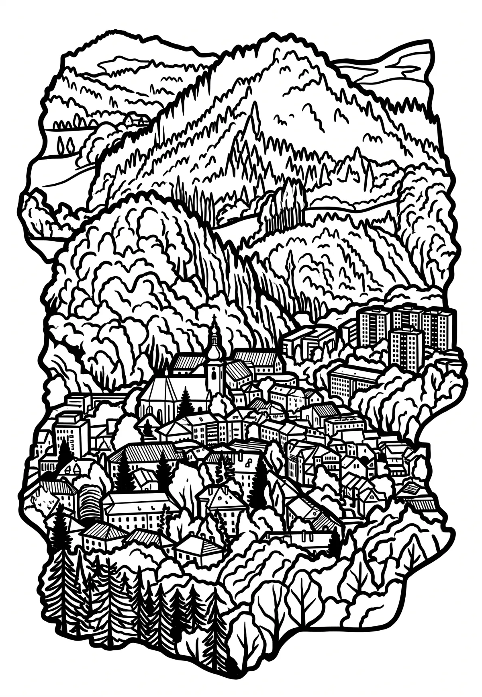

Rožnov pod Radhoštěm
Zlínský kraj · 378 m n. m.

město · #069
Rožnov pod Radhoštěm (do roku 1912 pouze Rožnov, německy Rosenau či Rožnau) je město o celkové rozloze 3 948,23 hektarů s rozsahem poloh přibližně 360–950 metrů, většinou plochy v krajinné oblasti Rožnovská brázda, součásti Západních Beskyd, v okrese Vsetín ve Zlínském kraji na území České republiky.